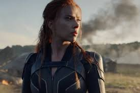
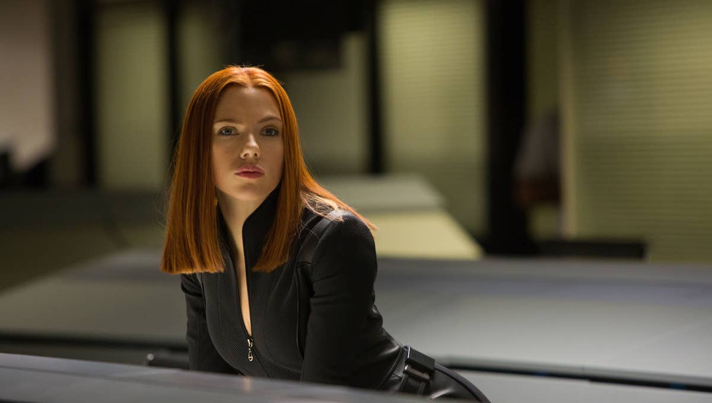

AT SOME POINT WE ALL HAVE TO CHOOSE BETWEEN WHO THE WORLD WANTS YOU TO BE, AND WHO YOU ARE"
At a young age, Natasha Romanoff was indoctrinated by the Red Room, a Russian training program that took young girls and turned them into lethal undercover agents.

Exhibiting no super human abilities, the Black Widow boasts ultimate human levels of strength, agility, and stamina. She is extensively trained to near perfection in a variety of fighting styles, such as karate, judo, kung fu, and wrestling, and with all manner of weapons—both traditional and high-tech—combined with her background in gymnastics, acrobatics, and ballet to always accomplish her mission. She can use a simple handgun just as well as a Chitauri battle staff or even Captain America's shield. Her signature weapons include dual batons, a pair of Glock 26s and the Black Widow’s Bite—bracelets that discharge electricity. Romanoff also displays great skill when it comes to hacking in computers and technological systems to dig for information or regaining control.

The Black Widow is loyal to S.H.I.E.L.D. and Nick Fury before they both realize HYDRA manipulated them. Fury brings Romanoff and Barton in when he activates the Avengers Protocol, putting them side by side with Captain America, Iron Man, Hulk and Thor. She goes on to fight alongside with Scarlet Witch, Vision, Falcon, War Machine, Winter Soldier, Spider-Man, Black Panther, and the Dora Milaje.